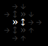
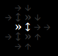
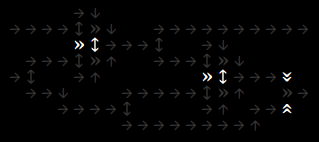
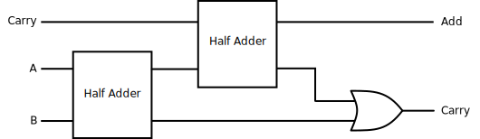
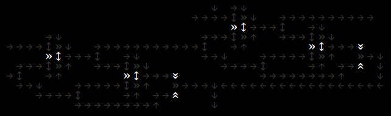

![]()
Arrows
I'm amazed how simple rules create unique and complex behaviours. The following arrows could be combined to make larger logic gates and eventually a computer
There are 3 arrows:- normal →
- invert »
- divide ↔
These arrows can be combined to make logic gates. The simplest gates are the OR gate by pointing 2 arrows to the same spot. The NOT gate is the invert arrow. We could create any boolean expression from these two logic gates, but having AND and XOR gates make things easier to build
We can make an AND gate with NOT and OR gates using DeMorgan's Law. AND is equivenlent to NOT ((NOT A) OR (NOT B)). Converting this into arrows gives us the following

The XOR is a little bit more difficult to create and introduced a challenge working with arrows - There's no easy way to cross lines. In a real chip, there is various levels for wires to go around each other but here in 2D, that's not possible. I'll show my partial solution later but being lazy, I found a XOR gate made of NOR gates and does not overlap.
 which translates to:

which translates to:

Now we have the basic gates we can combine them to make a simple adder
Adding Machine
Addition is a useful thing for computers do. This can be seen in a computer's arithmetic logic unit which is a central part of the a computer's cpu.
We can start builing an adder. The truth table is below:
| Input A | Input B | Ouput Sum | Ouput Carray |
|---|---|---|---|
| 0 | 0 | 0 | 0 |
| 0 | 1 | 1 | 0 |
| 1 | 0 | 1 | 0 |
| 1 | 1 | 0 | 1 |
The most common half adder design looks like the following. We can't implement this directly as there's no way for us to make the line cross, in red below
To get this to work. I cross lines by taking the XOR of the XOR. I found that the following works: A = XOR(XOR(A, B), B). This function is seen in the arrows below

It takes many arrows for lines to cross by replacing it with that function. I think it would be fun to work on a line reduction function that could take a binary function and reduce the number of line crosses or where it would be cheaper than using 3 xors.I'm sure there is a way to solve this on a boolean alegbra side. Even a function that takes a boolen expression and outputs the number of line crosses would allow that to be used in an optimizer function
Coverted into arrows:
Right now we just built a half-adder where the input in missing a carry. We can fix that by adding that. Below is a way of doing that with two half adders and an or gate
Using the half adders is useful as we don't have to design another circuit and we can just put half-adder blocks into the new design
And finally we can combine 4 full adders to make a 4-bit adder

I enjoyed making this and it was a fun challenge. I also learned lots. I hope to pick it up again and try again to make a simple computer. I sure everything could be much smaller and faster than it is.
The game logic runs in Rust with help from ggez; a window management, 2D graphics and event handling library. Written in rust allows for fast simulations of a large number of options. The Rust library is used through a C interface using ccfi in python.
The Python side is where the arrows are being placed. A “Board” object is to rust to be displayed and run. In addition it contains higher level drafter, where more complex boards can be designed. Right now in the drafter, there is a topological function to arrange sub-blocks and a basic router for wires using breadth first search. Some of these I dropped but having the flexibility of trying different things quick is important
If you would like to take a look and run it, it's avalible on github